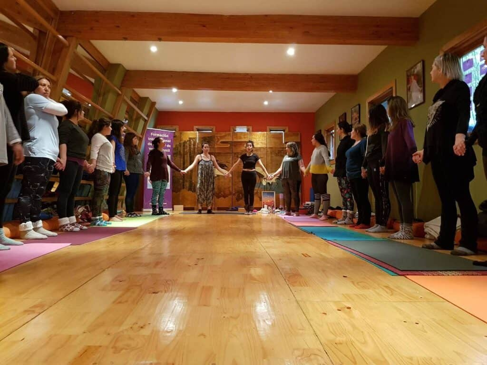

Verónica se conectó con su niña interior a través de la formación internacional de monitor de yoga infantil
Verónica M., Ingeniero financiero, comenta primero que nada que está muy agradecida con aquellos que hicieron posible su experiencia, la cual le encantó porque le ayudó a conectarse con su niña interior. Solo ha expresado palabras de gratitud, y opina que esta formación es una herramienta que no solo necesitan los niños, sino también los adultos.
Marita se va llena de energía a transmitir sus conocimientos y seguir aprendiendo
La talentosa actriz y profesora de yoga Marita García está súper contenta con la formación que le ha brindado YogaKiddy.
Asegura que se va llena de energía, con su niña interior lista para jugar con otros chicos, y preparada además para empezar a compartir la hermosa herramienta del yoga con aquellos que están en sus primeros años de vida.
Patricia rescata la relevancia de enseñar el yoga en un mundo ajetreado
La empresaria y consultora Patricia E. comenta que este curso de formación de Monitor de Yoga Infantil hace que nos conectemos con en niño que todos tenemos dentro, es un vínculo con la infancia y un aprendizaje enorme para brindar a los pequeños. Sobre todo en una sociedad en la que la cotidianidad es tan ajetreada.